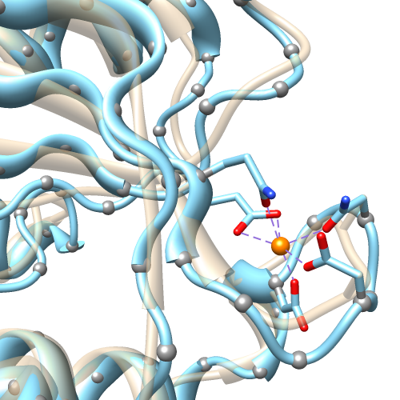

Chimera Commands Index
Usage:
ribspline method
[ spec atom-spec ]
[ smoothing none | strand | coil | both ]
[ stiffness s ]
|
 |
bspline: tan;
cardinal (unsmoothed): light blue;
gray balls: α-carbon positions
|
Ribspline sets the method of
ribbon path calculation:
- bspline or default
- path smoothed over five successive residues, may not coincide exactly with
any mainchain atoms
- cardinal
- path smoothed over four successive residues, follows
guide
atom positions exactly unless additional smoothing is applied;
to minimize the appearance of kinks, a tubular ribbon
(for example, command: ribrepr rounded;
ribscale licorice) may be preferred
The options can be given in any order.
Option keywords can be truncated to unique strings
and their case does not matter.
The spec option allows limiting the command to certain models;
molecule models containing any atom in
atom-spec
will be affected. Only one method can be used per molecule model.
The remaining options affect only the cardinal spline:
- whether to perform additional smoothing,
and if so, for which types of secondary structure
(helix and strand assignments are taken from the input
structure file or generated with ksdssp):
- none (default)
- strand - peptide/protein strand
- coil - peptide/protein nonhelix, nonstrand; nucleic acid
- both - strand and coil
- stiffness or degree of resistance against changes in path direction
(range 0.0-1.0, default 0.8)
Other ways to control the ribbon path method are with
the Selection Inspector and the
molecule model attributes panel.
See also:
ribbon,
ribbackbone,
ribrepr,
ribscale,
ribclass,
nucleotides,
Ribbon
Style Editor
{kind=link}